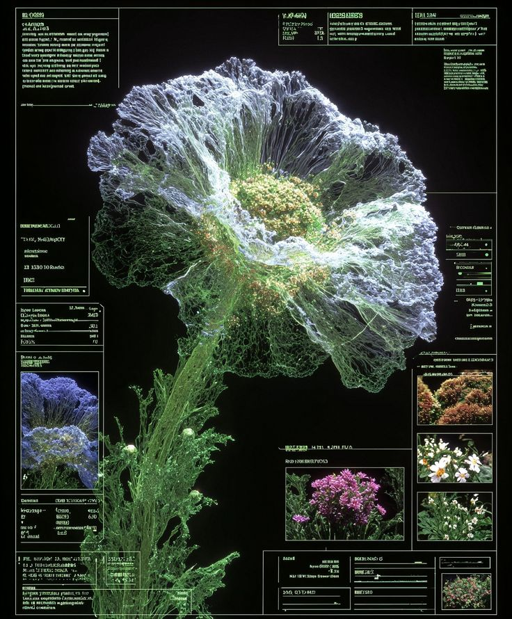
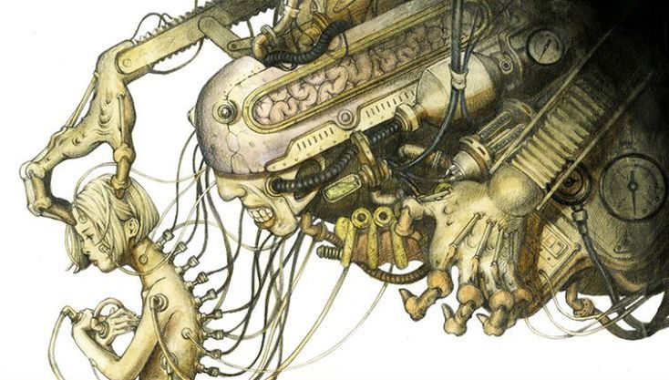
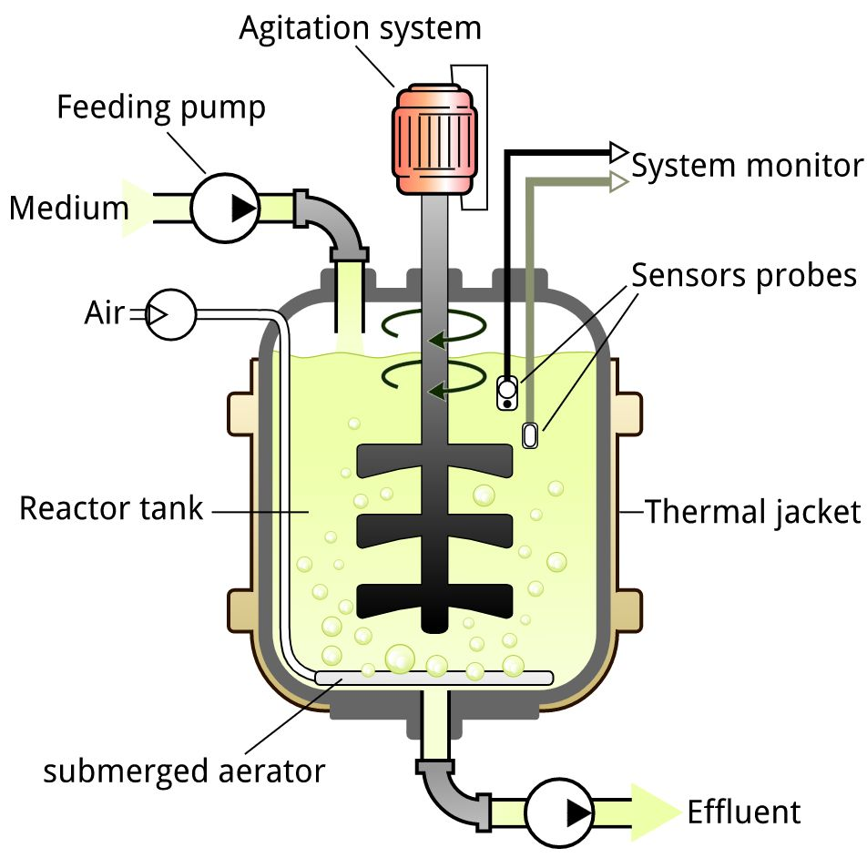
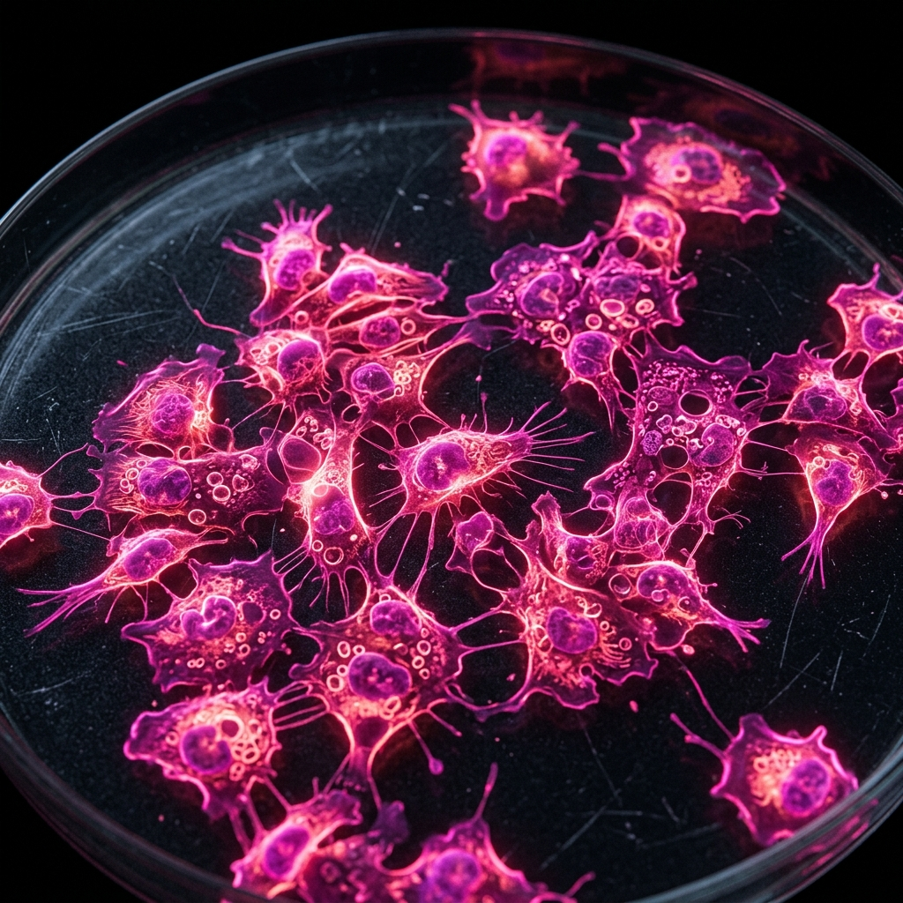
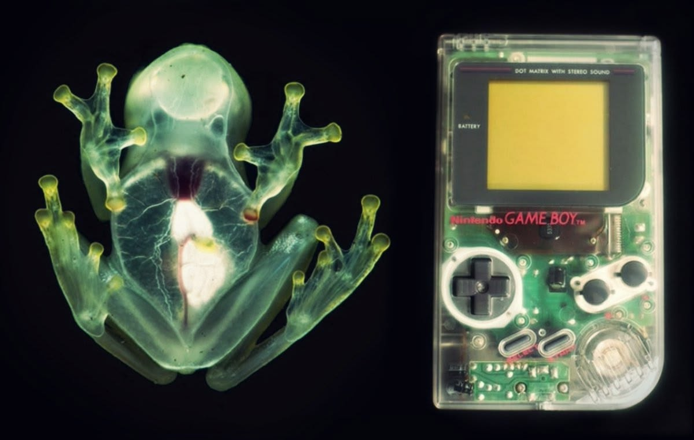

La biotecnología utiliza organismos o células vivas para desarrollar o modificar productos con fines específicos, como los alimentos transgénicos.
Está relacionada con la ingeniería genética y tiene aplicaciones en áreas como la alimentación, medicina, industria, medio ambiente y agricultura. Además, contribuye al desarrollo de productos más seguros y eficientes, así como a la reducción del impacto ambiental y al desarrollo sostenible.
Beneficios de la Biotecnología
Reducción del Impacto Ambiental
Disminuye las emisiones de CO₂, el consumo de agua y la generación de residuos en la industria alimentaria.
Agricultura Sostenible
Favorece alimentos más nutritivos con menor utilización de pesticidas y productos químicos.
Productos Seguros
Contribuye al desarrollo de productos más seguros, eficientes y con alto grado de pureza bajo condiciones controladas.
02
Conceptos Fundamentales
Proceso Metabólico
¿Qué es la Fermentación?

La fermentación es un proceso metabólico que ocurre sin oxígeno, en el cual moléculas complejas, como la glucosa, se transforman en sustancias más sencillas y se obtiene energía.
Durante este proceso se produce piruvato y, dependiendo del microorganismo y del sustrato utilizado, se pueden obtener diferentes productos, como ácido láctico, alcohol o ácido acético.
Glucosa→Piruvato→Ácido Láctico / Etanol
Producción Industrial
¿Qué son los Bioprocesos?

Son métodos que utilizan células vivas o sus componentes, como enzimas, para obtener productos de interés industrial o para beneficio humano.
Permiten producir alimentos, medicamentos y otros productos bajo condiciones controladas, mejorando su calidad y eficiencia. También pueden emplear organismos modificados genéticamente para obtener sustancias como insulina, enzimas y proteínas.
Ingeniería
¿Qué son los Biorreactores?

Son recipientes diseñados para cultivar células o microorganismos bajo condiciones controladas.
Permiten regular factores como la temperatura, pH, aireación, mezcla y oxígeno, logrando cultivos más uniformes y facilitando la producción a mayor escala.
TEMP 37°CpH 6.8O₂ 95%RPM 250
In Vitro
¿Qué son los Cultivos Celulares?

Son modelos de estudio realizados in vitro, donde las células se mantienen o reproducen bajo condiciones controladas en el laboratorio. Estas células pueden obtenerse de tejidos, órganos o fluidos como la sangre. El objetivo es conservar sus características fisiológicas, bioquímicas y genéticas para estudiar su comportamiento de manera similar a como ocurre en condiciones naturales.
Cultivo de Órganos
Mantiene la estructura y organización del órgano en condiciones controladas, permitiendo estudiar sus relaciones internas. Sin embargo, tiene un crecimiento limitado y no puede propagarse.
Explante Primario
Utiliza un fragmento de tejido u órgano que se coloca sobre una superficie, donde las células pueden adherirse y crecer. No requiere un crecimiento previo in vitro.
Cultivo de Células
Emplea células separadas de un organismo o de un explante. Aunque se pierden algunas interacciones entre ellas, pueden reproducirse fácilmente y permiten estudiar células de un mismo tipo.
Agricultura
Cultivo de Tejidos Vegetales

Técnica de biotecnología que permite cultivar células, tejidos u órganos de una planta fuera de ella, en un medio nutritivo y bajo condiciones controladas de luz, temperatura y esterilidad.
Se utiliza para multiplicar plantas rápidamente, regenerarlas y obtener plantas sanas, siendo una herramienta importante en la agricultura y la investigación biotecnológica.
03
Productos Biotecnológicos
Cinco aplicaciones que transformaron la industria, la medicina y la agricultura.
01
Medicina
Insulina Humana Recombinante
1982FDA aprueba Humulin
La insulina humana recombinante es uno de los ejemplos más importantes de la aplicación de la biotecnología en la medicina. Antes de utilizar técnicas de ADN recombinante, la insulina se obtenía principalmente de los páncreas de animales como cerdos y bovinos.
¿Cómo se obtiene?
Mediante la tecnología de ADN recombinante, se introduce la información genética necesaria para producir insulina humana en microorganismos, como bacterias. Estos se cultivan en condiciones controladas para que produzcan la proteína. Después, la insulina se recupera, purifica y procesa hasta obtener un producto adecuado para uso médico. En 1982, la FDA aprobó Humulin, la primera insulina humana biosintética obtenida mediante tecnología de ADN recombinante.
Cualidades del producto
Permite producir grandes cantidades de una proteína prácticamente idéntica a la insulina humana, con un alto grado de pureza y bajo condiciones controladas. Su desarrollo también permitió disminuir la dependencia de fuentes animales.
02
Agricultura
Maíz Bt
Organismo:Bacillus thuringiensis
Cultivo desarrollado mediante ingeniería genética para ofrecer protección contra determinadas plagas de insectos.
¿Cómo se obtiene?
Los científicos incorporan al maíz un gen de Bacillus thuringiensis. Este gen contiene la información necesaria para que la planta produzca una proteína que afecta a determinados insectos cuando se alimentan de ella. La característica de resistencia queda incorporada y puede transmitirse a las siguientes generaciones.
Cualidades del producto
Proporciona protección frente a ciertas plagas y puede contribuir a disminuir el uso de algunos insecticidas. Ayuda a proteger el rendimiento del cultivo frente a daños ocasionados por insectos. La biotecnología agrícola utiliza este tipo de modificaciones para incorporar características específicas a los cultivos.
03
Agricultura
Papaya Resistente al PRSV
Virus:Virus de la mancha anular
La papaya resistente al virus de la mancha anular es otro ejemplo de la aplicación de la ingeniería genética en la agricultura. Este producto surgió como respuesta a una enfermedad viral que representó una amenaza importante para la producción de papaya.
¿Cómo se obtiene?
Mediante ingeniería genética se introdujo en la planta información genética relacionada con el virus de la mancha anular. Esta modificación permite que la planta pueda defenderse del virus y desarrollar resistencia.
Cualidades del producto
La principal característica es su resistencia al virus de la mancha anular, lo que permite proteger los cultivos y mantener la producción en zonas donde la enfermedad representa un problema. Este ejemplo demuestra que la biotecnología puede utilizarse no solamente para modificar características nutricionales, sino también para ayudar a las plantas a enfrentar enfermedades.
04
Industria Láctea
Quimosina para Queso
Microorganismo:Aspergillus niger
Enzima utilizada en la industria láctea para producir queso. Su función principal es ayudar a coagular la leche y formar la cuajada.
¿Cómo se obtiene?
Actualmente pueden utilizarse microorganismos para producir quimosina mediante procesos de fermentación. Por ejemplo, la FDA registra preparaciones de quimosina producidas utilizando Aspergillus niger. El microorganismo se cultiva bajo condiciones controladas para obtener la enzima, que posteriormente se recupera y purifica. La FDA reconoce preparaciones de quimosina producidas mediante diferentes microorganismos para su utilización en la elaboración de quesos y otros productos lácteos.
Cualidades del producto
Facilita la coagulación de la leche y permite obtener la textura característica de muchos quesos. El uso de enzimas producidas mediante microorganismos permite contar con una fuente controlada de esta sustancia para la industria alimentaria.
05
Alimentaria
Lactasa para Productos Sin Lactosa
Microorganismo:Kluyveromyces lactis
Enzima utilizada para elaborar leche y otros productos lácteos con menor cantidad de lactosa. Es un ejemplo de cómo la biotecnología puede utilizar microorganismos para obtener enzimas destinadas a la industria alimentaria.
¿Cómo se obtiene?
La lactasa puede producirse mediante microorganismos, como Kluyveromyces lactis. Estos microorganismos se cultivan bajo condiciones controladas para obtener la enzima. Posteriormente, la lactasa se incorpora al proceso de elaboración de productos lácteos. La enzima rompe la lactosa, que es el azúcar característico de la leche, en azúcares más simples: glucosa y galactosa.
Cualidades del producto
La utilización de lactasa permite elaborar productos con menor cantidad de lactosa y facilita su consumo para personas que tienen dificultad para digerir este azúcar. La FDA incluye preparaciones de lactasa de origen microbiano entre las enzimas utilizadas en alimentos.
Lactosa→Glucosa + Galactosa
04
Integrantes
El equipo detrás de esta exploración sobre biotecnología.
FP
Fernando Paz
AA
Annete Aguirre
LC
Lesley Chavez
05
Blog Biotech
Ideas, procesos y conversaciones sobre la ciencia que transforma la vida.
Bioprocesos
Fermentación: transformar lo invisible
La fermentación conecta microorganismos, energía y alimentos. En el laboratorio, controlar el pH, la temperatura y el sustrato convierte un proceso natural en una herramienta precisa.
Leer artículo
Desde el ácido láctico hasta el etanol, distintos microorganismos producen moléculas útiles a partir de rutas metabólicas controladas. Esta capacidad permite diseñar procesos más eficientes y sostenibles para la industria alimentaria.
Medicina
Insulina recombinante: precisión al servicio de la salud
La tecnología de ADN recombinante permitió producir insulina humana en microorganismos bajo condiciones controladas.
Leer artículo
El proceso combina ingeniería genética, cultivo microbiano, recuperación y purificación. Es un ejemplo de cómo la biotecnología puede convertir conocimiento molecular en soluciones médicas a gran escala.
Laboratorio
Cultivos celulares: observar la vida en condiciones controladas
Los cultivos celulares permiten estudiar el comportamiento de células fuera del organismo y comprender sus respuestas.
Leer artículo
La temperatura, el medio nutritivo, la esterilidad y el intercambio gaseoso son variables esenciales. Al controlar estas condiciones, el laboratorio se convierte en una ventana para investigar procesos fisiológicos y desarrollar aplicaciones.
06
Comentarios y sugerencias
Comparte tu opinión sobre el sitio, el contenido y futuras mejoras.
Conversación general del sitio
Abrir comentarios
Los comentarios se compartirán mediante GitHub Discussions con Giscus. Para comentar se necesita una cuenta de GitHub.
07
Referencias
Iberdrola. (s. f.). ¿Qué es la biotecnología?iberdrola.com
Abrir comentarios